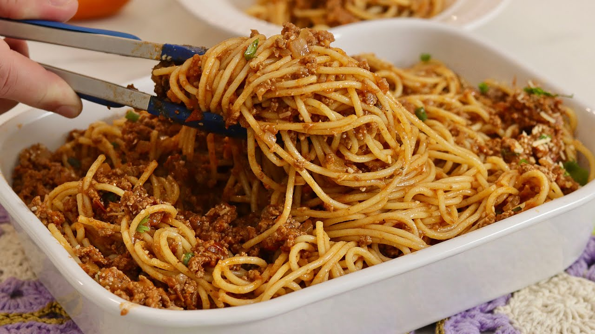

Macarronada

⏱ Total: 35min
Preparo: 10min
Cozimento: 25min
🍽 Porções: 4
Dificuldade: Fácil
Ingredientes
- 500 g de espaguete
- 2 colheres (sopa) de azeite
- 3 dentes de alho picados
- 1 cebola picada
- 400 g de carne moída
- 1 lata de molho de tomate
- Sal e pimenta a gosto
- Cheiro-verde e queijo ralado a gosto
Modo de preparo
1
Cozinhe o macarrão em água fervente com sal até ficar al dente e escorra.
2
Em uma panela, aqueça o azeite e refogue o alho e a cebola.
3
Junte a carne moída e mexa até dourar.
4
Acrescente o molho de tomate, sal e pimenta e cozinhe por 10 minutos.
5
Misture o molho ao macarrão, finalize com cheiro-verde e queijo ralado.